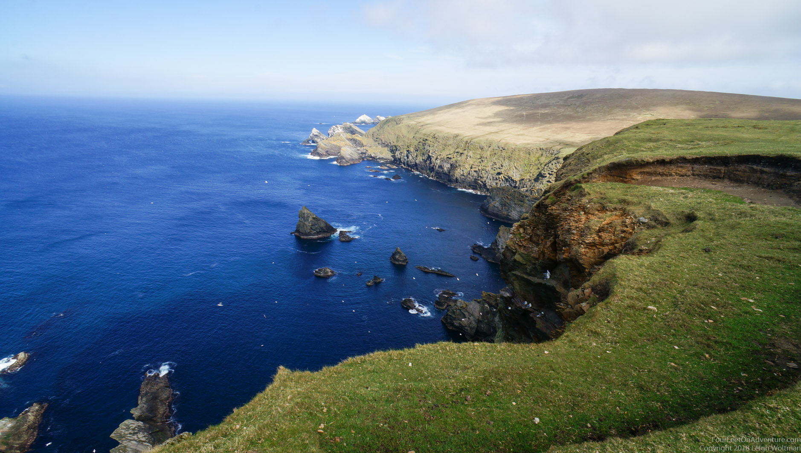
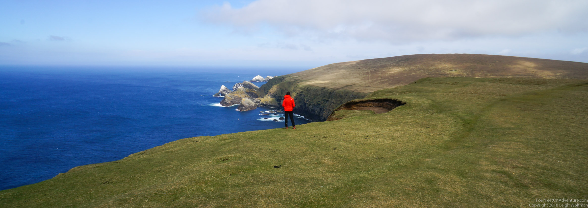
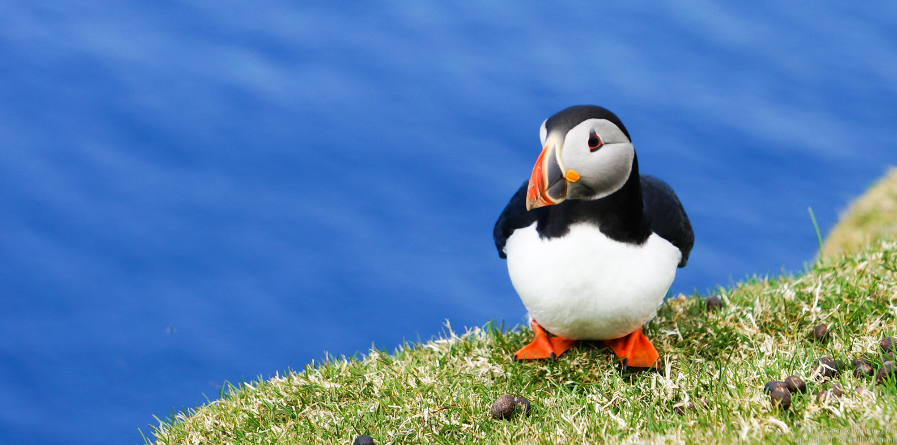
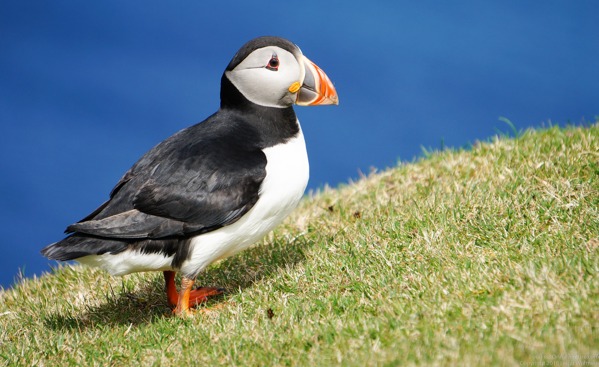
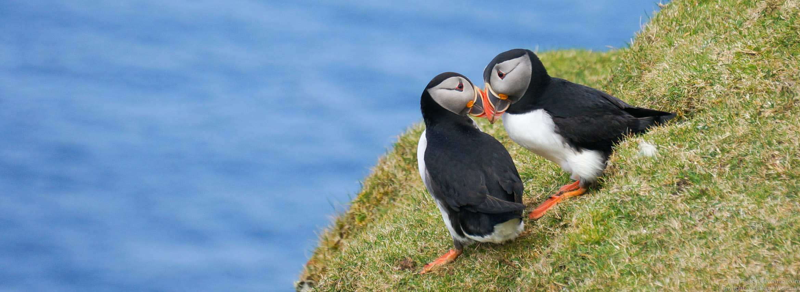
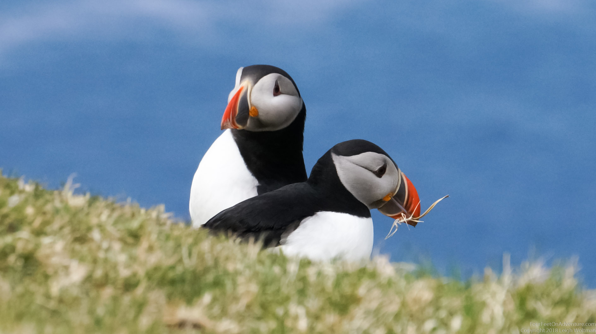
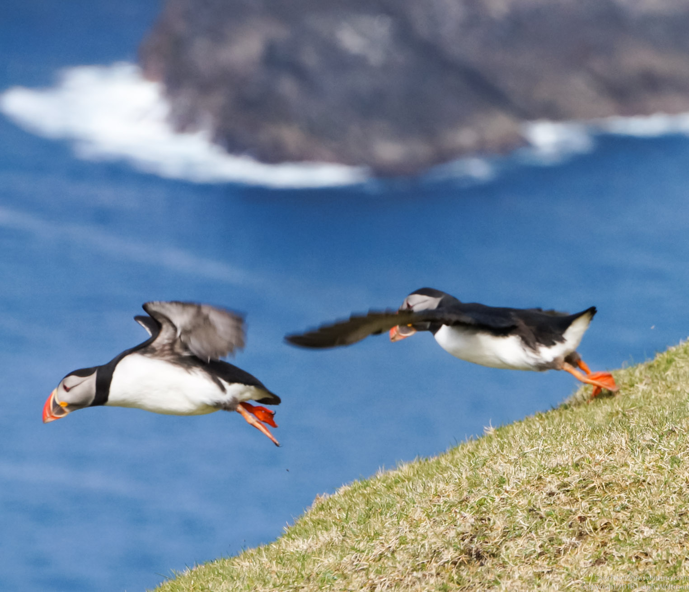
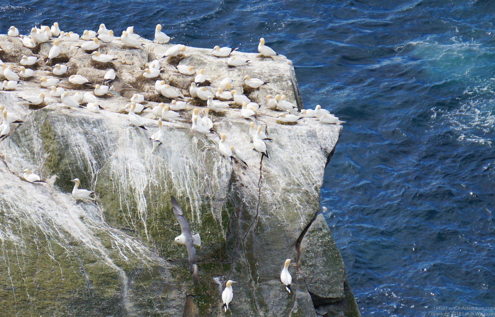
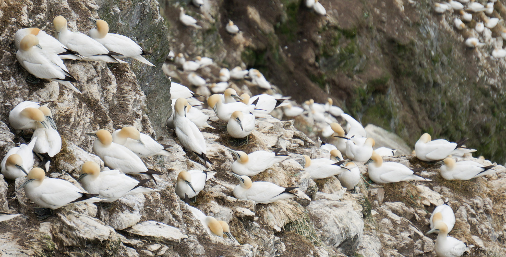

Hermaness is located in the very Northern tip of the UK, the most Northern island of the Shetlands, the most Northerly group of islands in Scotland, the most Northern country of the UK. Hermaness is also way passed the most northerly bus stop (which is a thing), the most northerly post office (also a thing), and the most northerly fish & chips shop of the UK. And probably a couple more of those. It’s as close to the North Pole as you get in the UK.
Not only is its location special, Hermaness is a national nature reserve consisting of massive cliffs and morelands, and famous for its birds.


First, the thing we (and probably most other visitors) actually came for, puffins! Where are they? Well, as soon as we got to the cliff site and sat down for a minute to figure out where to go, they started to pop up out of holes. Pairs have a hole, and they dig. And, they look so cute! They were walking around, from their hole to outside, saying hi to the neighbour, picking up some grass, walking back to the hole to disappear inside and probably do some interior decoration before coming back out. They would take little flights too, but usually they were back within the minute. Did you know that they shed their amazing looking beaks after the breeding season for something duller and probably more functional? We just sat there for a couple of hours, observing and enjoying the bird activity around us.





Not only puffins were there, at our time of visit, there were about 26000 gannets nesting there (no, we didn’t count, google said so). When approaching, you see some rocks in the distance covered in bird poop. Wrong! Upon coming closer, you’ll see that the bird poop breaks up in little dots. Even more closer, the dots get beaks and yellow heads. And start to smell. Massive amounts of gannets. They breed in colonies on steep surfaces, so that they can take off easily. They have a mate for life, and are not too keen on others, so that the distance between 2 nests tends to be 2x neck+head+beak distance, so that pairs can’t pick on other pairs. And those beaks look sharp! We are so amazed that we, again, just sit down and stare at the gannetry for a while. Some are circling around, the males searching for nest material? It was an overwhelming picture to see that all happening. They seem to land randomly, but we guess they can tell one gannet from another and find their partner back. I’m as always amazed by these birds, they are so pretty looking, streamlined, and when they dive they become torpedo’s and I can watch them fish forever.


Another bird species we saw nesting was the fumar. It looks like a seagull, but it’s not (says wikipedia, but knowing nothing about them we came to the same conclusion). They have special stiff wings, and also a tubed nose, as you can see clearly on the picture. Apparently they can spit some nasty oily stomach content on predators. Llucky we didn’t come close to any nests. Their flights around the cliffs are amazing, and we couldn’t stop watching them gliding about.

Then the bonxies (Shetland name), or great skua's. These birds just breed on the moorland like they have no predators. Which probably they don’t on the Shetlands at least. It’s a bit of a vicious bird, it attacks other birds so that they drop their prey, for example gannets and don’t have to go out fishing themselves. They have quite the attitude if you see them sitting on their nests! Like a boss! They apparently attack people as well, but since we kept to the path, we seemed to be safe.

Last bird to mention was the red-throated diver, which looked -on a picture on the fence of the area- a lot like a loon, and upon further research really is a loon. It’s red-throat shows up around breeding season, and because there were about 5 couples breeding, a whole area was shut down for human roaming, there was a fine of something like 5000 pounds for disturbing them. Globally not endangered, but probably in Europe or maybe even UK. We just left them to it, endangered or not, why disturb a breeding bird if you don’t have to.

If you want to read a bit more about this amazing place, this is a good read: https://www.nature.scot/sites/default/files/2018-02/The%20Story%20of%20Hermaness%20National%20Nature%20Reserve.pdf. We really enjoyed it, glad we stopped in.